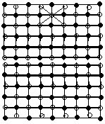

二、例题
利用奇数与偶数的这些性质，我们可以巧妙地解决许多实际问题.
例1 1+2+3+…+1993的和是奇数？还是偶数？
分析 此题可以利用高斯求和公式直接求出和，再判别和是奇数，还是偶数.但是如果从加数的奇、偶个数考虑，利用奇偶数的性质，同样可以判断和的奇偶性.此题可以有两种解法。
解法1：∵1+2+3+…+1993

又∵997和1993是奇数，奇数×奇数=奇数，
∴原式的和是奇数。
解法2：∵1993÷2=996…1，
∴1～1993的自然数中，有996个偶数，有997个奇数。
∵996个偶数之和一定是偶数，
又∵奇数个奇数之和是奇数，
∴997个奇数之和是奇数。
因为，偶数+奇数=奇数，
所以原式之和一定是奇数。
例2 一个数分别与另外两个相邻奇数相乘，所得的两个积相差150，这个数是多少？
解法1：∵相邻两个奇数相差2，
∴150是这个要求数的2倍。
∴这个数是150÷2=75。
解法2：设这个数为x，设相邻的两个奇数为2a+1，2a-1（a≥1）.则有
（2a+1）x-（2a-1）x=150，
2ax+x-2ax+x=150，
2x=150，
x=75。
∴这个要求的数是75。
例3 元旦前夕，同学们相互送贺年卡.每人只要接到对方贺年卡就一定回赠贺年卡，那么送了奇数张贺年卡的人数是奇数，还是偶数？为什么？
分析 此题初看似乎缺总人数.但解决问题的实质在送贺年卡的张数的奇偶性上，因此与总人数无关。
解：由于是两人互送贺年卡，给每人分别标记送出贺年卡一次.那么贺年卡的总张数应能被2整除，所以贺年卡的总张数应是偶数。
送贺年卡的人可以分为两种：
一种是送出了偶数张贺年卡的人：他们送出贺年卡总和为偶数。
另一种是送出了奇数张贺年卡的人：他们送出的贺年卡总数=所有人送出的贺年卡总数-所有送出了偶数张贺年卡的人送出的贺年卡总数=偶数-偶数=偶数。
他们的总人数必须是偶数，才使他们送出的贺年卡总数为偶数。
所以，送出奇数张贺年卡的人数一定是偶数。
例4 已知a、b、c中有一个是5，一个是6，一个是7.求证a-1，b-2，c-3的乘积一定是偶数。
证明：∵a、b、c中有两个奇数、一个偶数，
∴a、c中至少有一个是奇数，
∴a-1，c-3中至少有一个是偶数。
又∵偶数×整数=偶数，
∴（a-1）×（b-2）×（c-3）是偶数。
例5 任意改变某一个三位数的各位数字的顺序得到一个新数.试证新数与原数之和不能等于999。


则有a+a′=b+b′=c+c′=9，因为9不会是进位后得到的
又因为a′、b′、c′是a、b、c调换顺序得到的，
所以a+b+c=a′+b′+c′。
因此，又有（a+a′）+（b+b′）+（c+c′）=9+9+9，
即2（a+b+c）=3×9。
可见：等式左边是偶数，等式的右边（3×9=27）是奇数.偶数≠奇数.因此，等式不成立.所以，此假设“原数与新数之和为999”是错误的，命题得证。
这个证明过程教给我们一种思考问题和解决问题的方法.先假设某种说法正确，再利用假设说法和其他性质进行分析推理，最后得到一个不可能成立的结论，从而说明假设的说法不成立.这种思考证明的方法在数学上叫“反证法”。
例6 用代表整数的字母a、b、c、d写成等式组：
a×b×c×d-a=1991
a×b×c×d-b=1993
a×b×c×d-c=1995
a×b×c×d-d=1997
试说明：符合条件的整数a、b、c、d是否存在。
解：由原题等式组可知：
a（bcd-1）=1991，b（acd-1）=1993，
c（abd-1）=1995，d（abc-1）=1997。
∵1991、1993、1995、1997均为奇数，
且只有奇数×奇数=奇数，
∴a、b、c、d分别为奇数。
∴a×b×c×d=奇数。
∴a、b、c、d的乘积分别减去a、b、c、d后，一定为偶数.这与原题等式组矛盾。
∴不存在满足题设等式组的整数a、b、c、d。
例7 桌上有9只杯子，全部口朝上，每次将其中6只同时“翻转”.请说明：无论经过多少次这样的“翻转”，都不能使9只杯子全部口朝下。
解：要使一只杯子口朝下，必须经过奇数次“翻转”.要使9只杯子口全朝下，必须经过9个奇数之和次“翻转”.即“翻转”的总次数为奇数.但是，按规定每次翻转6只杯子，无论经过多少次“翻转”，翻转的总次数只能是偶数次.因此无论经过多少次“翻转”，都不能使9只杯子全部口朝下。
例8 假设n盏有拉线开关的灯亮着，规定每次拉动（n-1）个开关，能否把所有的灯都关上？请证明此结论，或给出一种关灯的办法。
证明：当n为奇数时，不能按规定将所有的灯关上。
因为要关上一盏灯，必须经过奇数次拉动它的开关。
由于n是奇数，所以n个奇数的和=奇数，
因此要把所有的灯（n盏）都关上，拉动拉线开关的总次数一定是奇数。
但因为规定每次拉动n-1个开关，且n-1是偶数，
故按规定拉动开关的总次数一定是偶数。
∵奇数≠偶数，
∴当n为奇数时，不能按规定将所有灯都关上。
当n为偶数时，能按规定将所有灯关上.关灯的办法如下：
设灯的编号为1，2，3，4，…，n.做如下操作：
第一次，1号灯不动，拉动其余开关；
第二次，2号灯不动，拉动其余开关；
第三次，3号灯不动，拉动其余开关；
…
第n次，n号灯不动，拉动其余开关.这时所有的灯都关上了。
例9 在圆周上有1987个珠子，给每一珠子染两次颜色，或两次全红，或两次全蓝，或一次红、一次蓝.最后统计有1987次染红，1987次染蓝.求证至少有一珠子被染上过红、蓝两种颜色。
证明：假设没有一个珠子被染上过红、蓝两种颜色，即所有珠子都是两次染同色.设第一次染m个珠子为红色，第二次必然还仅染这m个珠子为红色.则染红色次数为2m次。
∵2m≠1987（偶数≠奇数）
∴假设不成立。
∴至少有一个珠子被染上红、蓝两种颜色。
例10 如下页图，从起点始，隔一米种一棵树，如果把三块“爱护树木”的小牌分别挂在三棵树上，那么不管怎样挂，至少有两棵挂牌的树，它们之间的距离是偶数（以米为单位），这是为什么？
解：任意挑选三棵树挂上小牌，假设第一棵挂牌的树与第二棵挂牌的树之间相距a米，第二棵挂牌的树与第三棵挂
牌的树之间相距b米，那么第一棵挂牌的树与第三棵挂牌的树之间的距离c=a+b（米）（如下图），如果a、b中有一个是偶数，题目已得证；如果a、b都是奇数，因为奇数+奇数=偶数，所以c必为偶数，那么题目也得证。
例11 某校六年级学生参加区数学竞赛，试题共40道，评分标准是：答对一题给3分，答错一题倒扣1分.某题不答给1分，请说明该校六年级参赛学生得分总和一定是偶数。
解：对每个学生来说，40道题都答对共得120分，是个偶数.如果答错一道，相当于从120分中扣4分.不论答错多少道，扣分的总数应是4的倍数，即扣偶数分.从120里减去偶数.差仍是偶数.同样，如果有某题不答，应从120里减去（3-1）分.不论有多少道题没答，扣分的总数是2的倍数，也是偶数.所以从120里减去偶数，差仍是偶数.因此，每个学生得分数是偶数，那么全年级参赛学生得分总和也一定是偶数.
例12 某学校一年级一班共有25名同学，教室座位恰好排成5行，每行5个座位.把每一个座位的前、后、左、右的座位叫做原座位的邻位.问：让这25个学生都离开原座位坐到原座位的邻位，是否可行？
分析 为了便于分析，我们可借助于下图，且用黑白染色帮助分析.
我们把每一个黑、白格看作是一个座位.从图中可知，已在黑格“座位”上的同学要换到邻座，必须坐到白格上；已在白格“座位”上的同学要换到邻座，又必须全坐到黑格“座位”上.因此，要使每人换为邻座位，必须黑、白格数相等。
解：从上图可知：黑色座位有13个，白色座位有12个，13≠12，因此，不可能使每个座位的人换为邻座位。
例12 的解法，采用了黑白两色间隔染（着）色的办法.因为整数按奇偶分类只有两类，所以将这类问题转变为黑白两色间隔着色，可以帮助我们较直观地理解和处理问题.让我们再看一道例题，再体会一下奇偶性与染色的关系。
例13 在中国象棋盘任意取定的一个位置上放置着一颗棋子“马”，按中国象棋的走法，当棋盘上没有其他棋子时，这只“马”跳了若干步后回到原处，问：“马”所跳的步数是奇数还是偶数？
解：在中国象棋中，“马”走“日”字，如果将棋盘上的各点按黑白二色间隔着色（如图），可以看出，“马”走任何一步都是从黑色点走到白色点，或从白色点走到黑色点.因此，“马”从一色点跳到另一同色点，必定要跳偶数步.

因此，不论开始时“马”在棋盘的哪个位置上，而且不论“马”跳多少次，要跳回原处，必定要跳偶数步。
例14 线段AB有两个端点，一个端点染红色，另一个端点染蓝色.在这个AB线段中间插入n个交点，或染红色，或染蓝色，得到n＋1条小线段（不重叠的线段）.试证：两个端点不同色的小线段的条数一定是奇数。
证明：当在AB中插入第一点时，无论红或蓝色，两端色不同的线段仍是一条。
插入第二点时有三种情况：
①插入点在两端不同色的线段中，则两端不同色线段条数不变。
②插入点在两端同色的线段中，且插入点颜色与线段端点颜色相同，则两端不同色线段条数不变。
③插入点在两端同色的线段中，但插入点颜色与线段端点颜色不同，则两端不同色线段条数增加两条。
因此插入第二个点时端点不同色的线段数比插入第一个点时端点不同色的线段数（=1）多0或2，因此是奇数（1或3）。
同样，每增加一个点，端点不同色的线段增加偶数（0或2）条.因此，无论n是什么数，端点不同色的线段总是奇数条。